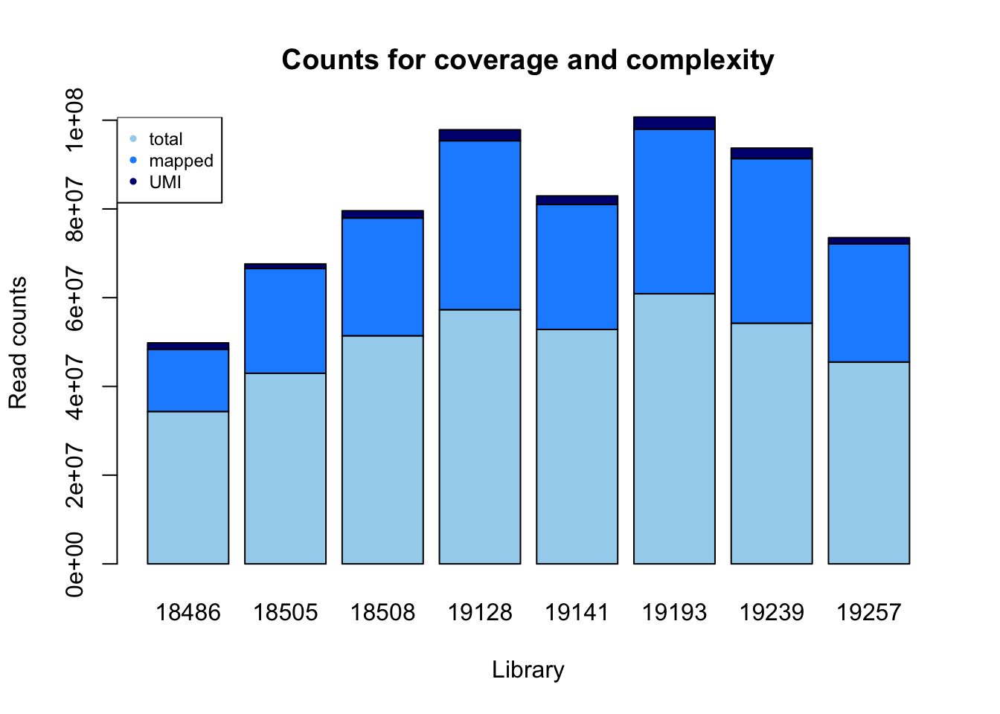
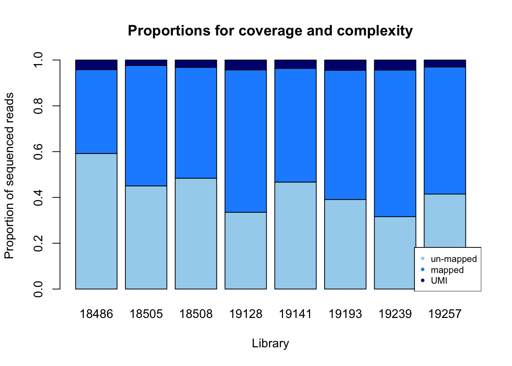

Initial Data exploration of Net-3
Briana Mittleman
2018-02-14
Last updated: 2018-02-18
Code version: c58a151
Mapped reads
This analysis is to look at the quality of the library net-3. This has the first 8 libraries from the 16 pilot libraries.
18505
18508
18486
19239
19141
19193
19257
19128
The first step is to run the raw reads through my snakefile. To do this I have to change the project directory in the /project2/gilad/briana/net_seq_pipeline/config.yaml to /project2/gilad/briana/Net-seq/Net-seq3/ .
The reads will go in: /project2/gilad/briana/Net-seq/Net-seq3/data/fastq/
I first use gunzip to unzip all of the fastq files then I submit the snakemake file from /project2/gilad/briana/net_seq_pipeline with nohup scripts/submit-snakemake.sh
Look at number of reads, mapped reads, deduplicated reads.
‘samtools view -c -F 4’
libraries=c("18486", "18505", "18508", "19128", "19141", "19193", "19239", '19257')
fastq=c( 34342214,42959246,205654644, 51413661,211367408,52841852,54253650,45506210)
mapped=c(14018943,23607050,26532568,38084941,28165596,37084191,37095436,26636660)
dedup= c(1446379, 1032174,1642314,2469438,1926300,2717515, 2361238, 1377712 )
read_count=rbind(fastq,mapped,dedup)
colnames(read_count)=libraries total_reads= sum(fastq)
total_reads[1] 698338885total_map= sum(mapped)
total_map[1] 231225385total_dedup= sum(dedup)
total_dedup[1] 14973070total_map/total_reads[1] 0.3311077total_dedup/total_map[1] 0.0647553Make a plot to look at this by line:
count_plot=barplot(as.matrix(read_count), main="Counts for coverage and complexity",
xlab="Library", col=c("lightskyblue2","dodgerblue1","navy"),
ylab="Read counts")
legend("topright", legend = c("total", "mapped", "UMI"), col=c("lightskyblue2","dodgerblue1","navy"), pch=20, cex = .75)
Look at this by proportions:
percent_mapped= mapped/fastq
percent_UMI= dedup/fastq
percent_mapped= percent_mapped - percent_UMI
percent_not_mapped= 1- percent_mapped - percent_UMI
prop=rbind(percent_not_mapped, percent_mapped, percent_UMI)
colnames(prop)= libraries
prop_plot=barplot(as.matrix(prop), main="Proportions for coverage and complexity",
xlab="Library", col=c("lightskyblue2","dodgerblue1","navy"),
ylab="Proportion of sequenced reads")
legend("bottomright", legend = c("un-mapped", "mapped", "UMI"), col=c("lightskyblue2","dodgerblue1","navy"), pch=20, cex = 0.75)
summary(mapped) Min. 1st Qu. Median Mean 3rd Qu. Max.
14018943 25801188 27401128 28903173 37087002 38084941 summary(percent_mapped) Min. 1st Qu. Median Mean 3rd Qu. Max.
0.1210 0.3056 0.5403 0.4594 0.6428 0.6927 summary(percent_not_mapped) Min. 1st Qu. Median Mean 3rd Qu. Max.
0.2592 0.3117 0.4326 0.5085 0.6605 0.8710 I will now use the get_mapped.py script from the previous analysis to see how long the mapped reads are. I copied it to /project2/gilad/briana/Net-seq/Net-seq3/code. The code takes in sorted bam file and an output text file. I will create a sbatch script to run this on all 8 files. This file is called wrap_get_mapped.sh and is in the same code directory.
#!/bin/bash
#SBATCH --job-name=wrap_get_map
#SBATCH --time=8:00:00
#SBATCH --partition=gilad
#SBATCH --mem=16G
#SBATCH --mail-type=END
module load Anaconda3
source activate net-seq
python /project2/gilad/briana/Net-seq/Net-seq3/code/get_mapped.py /project2/gilad/briana/Net-seq/Net-seq3/data/sort/YG-SP-NET3-18486-2018-1-8_S3_L008_R1_001-sort.bam /project2/gilad/briana/Net-seq/Net-seq3/output/mapped_stats_18486.txt
python /project2/gilad/briana/Net-seq/Net-seq3/code/get_mapped.py /project2/gilad/briana/Net-seq/Net-seq3/data/sort/YG-SP-NET3-18505-2018-1-8_S1_L008_R1_001-sort.bam /project2/gilad/briana/Net-seq/Net-seq3/output/mapped_stats_18505.txt
python /project2/gilad/briana/Net-seq/Net-seq3/code/get_mapped.py /project2/gilad/briana/Net-seq/Net-seq3/data/sort/YG-SP-NET3-18508-2018-1-8_S2_L008_R1_001-sort.bam /project2/gilad/briana/Net-seq/Net-seq3/output/mapped_stats_18508.txt
python /project2/gilad/briana/Net-seq/Net-seq3/code/get_mapped.py /project2/gilad/briana/Net-seq/Net-seq3/data/sort/YG-SP-NET3-19128-2018-1-8_S8_L008_R1_001-sort.bam /project2/gilad/briana/Net-seq/Net-seq3/output/mapped_stats_19128.txt
python /project2/gilad/briana/Net-seq/Net-seq3/code/get_mapped.py /project2/gilad/briana/Net-seq/Net-seq3/data/sort/YG-SP-NET3-19141-2018-1-8_S5_L008_R1_001-sort.bam /project2/gilad/briana/Net-seq/Net-seq3/output/mapped_stats_19141.txt
python /project2/gilad/briana/Net-seq/Net-seq3/code/get_mapped.py /project2/gilad/briana/Net-seq/Net-seq3/data/sort/YG-SP-NET3-19193-2018-1-8_S6_L008_R1_001-sort.bam /project2/gilad/briana/Net-seq/Net-seq3/output/mapped_stats_19193.txt
python /project2/gilad/briana/Net-seq/Net-seq3/code/get_mapped.py /project2/gilad/briana/Net-seq/Net-seq3/data/sort/YG-SP-NET3-19239-2018-1-8_S4_L008_R1_001-sort.bam /project2/gilad/briana/Net-seq/Net-seq3/output/mapped_stats_19239.txt
python /project2/gilad/briana/Net-seq/Net-seq3/code/get_mapped.py /project2/gilad/briana/Net-seq/Net-seq3/data/sort/YG-SP-NET3-19257-2018-1-8_S7_L008_R1_001-sort.bam /project2/gilad/briana/Net-seq/Net-seq3/output/mapped_stats_19257.txt
I will now make histograms showing the number of reads that map from the cigar strings.
#pull in data:
map.vec.18486=read.csv("../data/net-3-readmap/mapped_stats_18486.txt", header=FALSE)
map.vec.18505=read.csv("../data/net-3-readmap/mapped_stats_18505.txt", header=FALSE)
map.vec.18508=read.csv("../data/net-3-readmap/mapped_stats_18508.txt", header=FALSE)
map.vec.19128=read.csv("../data/net-3-readmap/mapped_stats_19128.txt", header=FALSE)
map.vec.19141=read.csv("../data/net-3-readmap/mapped_stats_19141.txt", header=FALSE)
map.vec.19193=read.csv("../data/net-3-readmap/mapped_stats_19193.txt", header=FALSE)
map.vec.19239=read.csv("../data/net-3-readmap/mapped_stats_19239.txt", header=FALSE)
map.vec.19257=read.csv("../data/net-3-readmap/mapped_stats_19257.txt", header=FALSE)
#pull in mayer as well
map.vec.mayer=read.csv("../data/mapped_mayer.txt", header=FALSE)#make histograms
par(mfrow=c(3,3))
hist((as.numeric(map.vec.18486$V1)), xlab="Bases", main="Histogram of 18486 mapped reads")
hist((as.numeric(map.vec.18505$V1)), xlab="Bases", main="Histogram of 18505 mapped reads")
hist((as.numeric(map.vec.18508$V1)), xlab="Bases", main="Histogram of 18508 mapped reads")
hist((as.numeric(map.vec.19128$V1)), xlab="Bases", main="Histogram of 19128 mapped reads")
hist((as.numeric(map.vec.19141$V1)), xlab="Bases", main="Histogram of 19141 mapped reads")
hist((as.numeric(map.vec.19193$V1)), xlab="Bases", main="Histogram of 19193 mapped reads")
hist((as.numeric(map.vec.19239$V1)), xlab="Bases", main="Histogram of 19239 mapped reads")
hist((as.numeric(map.vec.19257$V1)), xlab="Bases", main="Histogram of 19257 mapped reads")
hist((as.numeric(map.vec.mayer$V1)), xlab="Bases", main="Histogram of Mayer mapped reads")Deep tools analysis:
First I downloaded the gencode.hg19 gene gtf file. I will use bedops convert2bed.
awk '{ if ($0 ~ "transcript_id") print $0; else print $0" transcript_id \"\";"; }' gencode.v19.annotation.gtf | gtf2bed - > gencode.v19.annotation.bed
Deep tools code:
#!/bin/bash
#SBATCH --job-name=deeptools_netseq
#SBATCH --time=8:00:00
#SBATCH --partition=broadwl
#SBATCH --mem=30G
#SBATCH --mail-type=END
#SBATCH --output=deeptool_sbatch.out
#SBATCH --error=deeptools_sbatch.err
module load Anaconda3
source activate net-seq
bamCoverage -b /project2/gilad/briana/Net-seq/Net-seq3/data/sort/YG-SP-NET3-18486-2018-1-8_S3_L008_R1_001-sort.bam -o /project2/gilad/briana/Net-seq/Net-seq3/output/deeptools/net-seq-18486.bw
computeMatrix reference-point -S /project2/gilad/briana/Net-seq/Net-seq3/output/deeptools/net-seq-18486.bw -R /project2/gilad/briana/Net-seq/Net-seq3/gencode.v19.annotation.bed --referencePoint TSS -b 100 -a 100 -out /project2/gilad/briana/Net-seq/Net-seq3/output/deeptools/net-seq-18486.gz
plotHeatmap --sortRegions descend --refPointLabel "TSS" -m /project2/gilad/briana/Net-seq/Net-seq3/output/deeptools/net-seq-18486.gz -out /project2/gilad/briana/Net-seq/Net-seq3/output/deeptools/net-seq-18486.pngTo look at TES I will change the reference point to TES. This script is also in the code file as deep_tools_TES_net18486.sh.
#!/bin/bash
#SBATCH --job-name=deeptools_TES_netseq
#SBATCH --time=8:00:00
#SBATCH --partition=broadwl
#SBATCH --mem=30G
#SBATCH --mail-type=END
#SBATCH --output=deeptool_TES_sbatch.out
#SBATCH --error=deeptools_TES_sbatch.err
module load Anaconda3
source activate net-seq
#the bw file has already been created
computeMatrix reference-point -S /project2/gilad/briana/Net-seq/Net-seq3/output/deeptools/net-seq-18486.bw -R /project2/gilad/briana/Net-seq/Net-seq3/gencode.v19.annotation.bed --referencePoint TES -b 100o -a 1000 -out /project2/gilad/briana/Net-seq/Net-seq3/output/deeptools/net-seq-TES-18486.gz
plotHeatmap --sortRegions descend --refPointLabel "TSS" -m /project2/gilad/briana/Net-seq/Net-seq3/output/deeptools/net-seq-TES-18486.gz -out /project2/gilad/briana/Net-seq/Net-seq3/output/deeptools/net-seq-TES-18486.pngDo this for DNA hypersensitivity clusters as well. This script is in the code file as deep_tools_DHS_net18486.sh.
#!/bin/bash
#SBATCH --job-name=deeptools_DHS_netseq
#SBATCH --time=8:00:00
#SBATCH --partition=broadwl
#SBATCH --mem=30G
#SBATCH --mail-type=END
#SBATCH --output=deeptool_DHS_sbatch.out
#SBATCH --error=deeptools_DHS_sbatch.err
module load Anaconda3
source activate net-seq
#the bw file has already been created
computeMatrix reference-point -S /project2/gilad/briana/Net-seq/Net-seq3/output/deeptools/net-seq-18486.bw -R /project2/gilad/briana/Net-seq/Net-seq3/wgEncodeRegDnaseClusteredV3.bed -b 1000 -a 1000 -out /project2/gilad/briana/Net-seq/Net-seq3/output/deeptools/net-seq-dhs-18486.gz
plotHeatmap --sortRegions descend --refPointLabel "DHS" -m /project2/gilad/briana/Net-seq/Net-seq3/output/deeptools/net-seq-dhs-18486.gz -out /project2/gilad/briana/Net-seq/Net-seq3/output/deeptools/net-seq-dhs-18486.png
I am running these and 1 more looking at the TSS but at 1000 base pairs on each side.
timed out at 1000 need to try 500 on each side
Gene counts with Feature counts
I will use featureCounts to count the number of reads at each gene in the gencode.v19.annotation.gtf file. I will make a file that takes the bam as a input so I can run it on each bam file.
‘Usage: featureCounts [options] -a
This file is in the net3 code directory. featureCounts_genes.sh
#!/bin/bash
#SBATCH --job-name=featureCounts
#SBATCH --time=8:00:00
#SBATCH --partition=broadwl
#SBATCH --mem=16G
#SBATCH --mail-type=END
#SBATCH --output=featurecount.out
#SBATCH --error=featurecount.err
#$1 input bam full file
module load Anaconda3
source activate net-seq
sample=$1
describer=$(echo ${sample} | sed -e 's/.*\YG-SP-//' | sed -e "s/_L008_R1_001-sort.bam$//")
featureCounts -a /project2/gilad/briana/Net-seq/Net-seq3/gencode.v19.annotation.gtf -o /project2/gilad/briana/Net-seq/Net-seq3/output/featureCounts/${sample}-gene-counts.txt ${sample}
Try this with one file. /project2/gilad/briana/Net-seq/Net-seq3/data/sort/YG-SP-NET3-18486-2018-1-8_S3_L008_R1_001-sort.bam
Bedtools coverage is a better program for this analyisis. I want to look at coverage along the full gene, not by exon/transcript.
Need to cut the chr from the gencode file so this matches the way my bam files are written. cat gencode.Genes.bed |sed 's/^chr//' > gencode_noCHR_genes.bed
This is in the code directory as gencode_cov.sh
#!/bin/bash
#SBATCH --job-name=count_cov
#SBATCH --output=count_cov_sbatch.out
#SBATCH --error=count_cov_sbatch.err
#SBATCH --time=8:00:00
#SBATCH --partition=broadwl
#SBATCH --mem=36G
#SBATCH --mail-type=END
module load Anaconda3
source activate net-seq
sample=$1
describer=$(echo ${sample} | sed -e 's/.*\YG-SP-//' | sed -e "s/_L008_R1_001-sort.bam$//")
bedtools coverage -counts -sorted -a /project2/gilad/briana/Net-seq/Net-seq3/gencode_noCHR_genes_MT_Fsort.bed -b $1 > /project2/gilad/briana/Net-seq/Net-seq3/data/gencode_cov/${describer}.coverage.bed
run on /project2/gilad/briana/Net-seq/Net-seq3/data/sort/YG-SP-NET3-18486-2018-1-8_S3_L008_R1_001-sort.bam
I will run this on all 8 files then merge the files.
To merge:
touch all_files_coverage.bed
awk '{print $7}' NET3-18486-2018-1-8_S3.coverage.bed | paste -d'' all_files_coverage.bed > all_files_coverage.bed
cp all_files_coverage.bed tmp
for i in `cat list_of_files.txt`; do awk 'NR==FNR {a[NR]=$7;next} {print $0,a[FNR]}' $i tmp > tmp2; mv tmp2 tmp; done
cut -f -6 NET3-18486-2018-1-8_S3.coverage.bed > meta_info_coverage.bed
Now I will have the meta data seperate from the matrix of counts.
net_coverage=read.table("../data/all_files_coverage.bed", header=FALSE)
colnames(net_coverage)= libraries
net_coverage_meta=read.table("../data/meta_info_coverage.bed", header=FALSE)
colnames(net_coverage_meta)=c("chr", "start", "end", "gene", "score", "strand")Make one with counts and meta info:
net_cov_full= cbind(net_coverage_meta, net_coverage)Make a function that will tell me proportion of genes detected.
genes_detected=function(col){
#takes in net_cov_full col which corresponds to one library
tot_genes=nrow(net_cov_full)
exp_genes=sum(col!=0)
return(exp_genes/tot_genes)
}
prop_non0= c(genes_detected(net_cov_full$`18486`), genes_detected(net_cov_full$`18505`),genes_detected(net_cov_full$`18508`), genes_detected(net_cov_full$`19128`), genes_detected(net_cov_full$`19141`), genes_detected(net_cov_full$`19193`), genes_detected(net_cov_full$`19239`), genes_detected(net_cov_full$`19257`))
names(prop_non0)=libraries
barplot(prop_non0, ylim = c(0,1), main="Net-seq Genes detected", ylab="Proportion non zero genes", xlab="Library", col = 'Blue')Heatmap to see relatedness:
cor_function=function(data){
corr_matrix= matrix(0,8,8)
for (i in seq(1,8)){
for (j in seq(1,8)){
x=cor.test(net_coverage[,i], net_coverage[,j], method='pearson')
cor_ij=as.numeric(x$estimate)
corr_matrix[i,j]=cor_ij
}
}
return(corr_matrix)
}
net_cor_matrix=cor_function(net_coverage)
rownames(net_cor_matrix)=c("NA18486", "NA18505", "NA18508", "NA19128", "NA19141", "NA19193", "NA19239", 'NA19257')
colnames(net_cor_matrix)=c("NA18486", "NA18505", "NA18508", "NA19128", "NA19141", "NA19193", "NA19239", 'NA19257')library(reshape2)Warning: package 'reshape2' was built under R version 3.4.3library(ggplot2)
melted_net_corr=melt(net_cor_matrix)
head(melted_net_corr) Var1 Var2 value
1 NA18486 NA18486 1.0000000
2 NA18505 NA18486 0.9555217
3 NA18508 NA18486 0.9526759
4 NA19128 NA18486 0.9799010
5 NA19141 NA18486 0.9822975
6 NA19193 NA18486 0.9699379ggheatmap=ggplot(data = melted_net_corr, aes(x=Var1, y=Var2, fill=value)) +
geom_tile() +
labs(title="Net-seq Correlation Heatplot")
ggheatmapLook at the distribution of read counts:
- Create a length of gene column to standardize by length.
summary(net_cov_full$`18486`) Min. 1st Qu. Median Mean 3rd Qu. Max.
0.0 0.0 5.0 325.7 22.0 2651806.0 plot(log(sort(net_cov_full$`18486`, decreasing = TRUE)))
plot(log(sort(net_cov_full$`18505`, decreasing = TRUE)))which(net_cov_full$`18486`== max(net_cov_full$`18486`))[1] 12688 12689net_cov_full[12688,] chr start end gene score strand 18486
12688 2 118846049 118867604 ENST00000245787.4 0 + 2651806
18505 18508 19128 19141 19193 19239 19257
12688 11856396 14059279 10862066 8216975 11877635 18071447 10156398which(net_cov_full$`19239`== max(net_cov_full$`19239`))[1] 12689net_cov_full[12689,] chr start end gene score strand 18486
12689 2 118846049 118868573 ENST00000485520.1 0 + 2651806
18505 18508 19128 19141 19193 19239 19257
12689 11856396 14059279 10862067 8216975 11877635 18071449 10156398read buildup in insig2!
To look into this I will use bedtools genomecov. This will help me find the region where the build up is within this gene. I will do this for just one line first.
‘bedtools genomecov -ibam NA18152.bam -bg’
#!/bin/bash
#SBATCH --job-name=gencov_18486
#SBATCH --time=8:00:00
#SBATCH --partition=broadwl
#SBATCH --mem=20G
#SBATCH --output=gencov_sbatch.out
#SBATCH --error=gencov_sbatch.err
#SBATCH --mail-type=END
module load Anaconda3
source activate net-seq
bedtools genomecov -ibam /project2/gilad/briana/Net-seq/Net-seq3/data/sort/YG-SP-NET3-18486-2018-1-8_S3_L008_R1_001-sort.bam -bgI made this file, now I can look for the region and find the base position of the buildup.
gencov_18486=read.csv("../data/gencov_18486.bed", header=FALSE, sep = "\t", stringsAsFactors = FALSE)
colnames(gencov_18486)=c("chr", "start", "end", "count")
gencov_18486_insig2= gencov_18486[gencov_18486$chr == "2" & gencov_18486$start >= 118846049 & gencov_18486$end <= 118868573, ]Buildup is 118847163-118867371
https://genome.ucsc.edu/cgi-bin/hgTracks?db=hg19&lastVirtModeType=default&lastVirtModeExtraState=&virtModeType=default&virtMode=0&nonVirtPosition=&position=chr2%3A118853899%2D118860634&hgsid=657371987_p3YvC1JmckcMJLpbqv6SsBjfPeik
http://genome.ucsc.edu/cgi-bin/das/hg19/dna?segment=chr2:118847163,118867371I will now be able to search for our primers in this seq to see if that is why we get buildup.
GACGCTCTT
This sequence is in the reverse compliment of the linker:
/5rApp/(N)6AGATCGGAAGAGCGTC/3ddC
This is probably not long enough that this is the problem.
Mapping statistics:
The quality score is in the sorted bam file.
MAPQ: MAPping Quality. It equals -10*log10 Prob mapping position is wrong, rounded to the nearest integer. A value 255 indicates that the mapping quality is not available.
I will get the mapping quality stats from the bam files as I did for Net1. I coppied the pytho script to /project2/gilad/briana/Net-seq/Net-seq3/code. I will create a wrap function for this in bash.
#!/bin/bash
#SBATCH --job-name=wrap_get_map
#SBATCH --time=8:00:00
#SBATCH --partition=broadwl
#SBATCH --mem=20G
#SBATCH --mail-type=END
module load Anaconda3
source activate net-seq
python /project2/gilad/briana/Net-seq/Net-seq3/code/get_qual.py /project2/gilad/briana/Net-seq/Net-seq3/data/sort/YG-SP-NET3-18486-2018-1-8_S3_L008_R1_001-sort.bam /project2/gilad/briana/Net-seq/Net-seq3/output/mapped_qual_18486.txt
python /project2/gilad/briana/Net-seq/Net-seq3/code/get_qual.py /project2/gilad/briana/Net-seq/Net-seq3/data/sort/YG-SP-NET3-18505-2018-1-8_S1_L008_R1_001-sort.bam /project2/gilad/briana/Net-seq/Net-seq3/output/mapped_qual_18505.txt
python /project2/gilad/briana/Net-seq/Net-seq3/code/get_qual.py /project2/gilad/briana/Net-seq/Net-seq3/data/sort/YG-SP-NET3-18508-2018-1-8_S2_L008_R1_001-sort.bam /project2/gilad/briana/Net-seq/Net-seq3/output/mapped_qual_18508.txt
python /project2/gilad/briana/Net-seq/Net-seq3/code/get_qual.py /project2/gilad/briana/Net-seq/Net-seq3/data/sort/YG-SP-NET3-19128-2018-1-8_S8_L008_R1_001-sort.bam /project2/gilad/briana/Net-seq/Net-seq3/output/mapped_qual_19128.txt
python /project2/gilad/briana/Net-seq/Net-seq3/code/get_qual.py /project2/gilad/briana/Net-seq/Net-seq3/data/sort/YG-SP-NET3-19141-2018-1-8_S5_L008_R1_001-sort.bam /project2/gilad/briana/Net-seq/Net-seq3/output/mapped_qual_19141.txt
python /project2/gilad/briana/Net-seq/Net-seq3/code/get_qual.py /project2/gilad/briana/Net-seq/Net-seq3/data/sort/YG-SP-NET3-19193-2018-1-8_S6_L008_R1_001-sort.bam /project2/gilad/briana/Net-seq/Net-seq3/output/mapped_qual_19193.txt
python /project2/gilad/briana/Net-seq/Net-seq3/code/get_qual.py /project2/gilad/briana/Net-seq/Net-seq3/data/sort/YG-SP-NET3-19239-2018-1-8_S4_L008_R1_001-sort.bam /project2/gilad/briana/Net-seq/Net-seq3/output/mapped_qual_19239.txt
python /project2/gilad/briana/Net-seq/Net-seq3/code/get_qual.py /project2/gilad/briana/Net-seq/Net-seq3/data/sort/YG-SP-NET3-19257-2018-1-8_S7_L008_R1_001-sort.bam /project2/gilad/briana/Net-seq/Net-seq3/output/mapped_qual_19257.txt
qual_mayer= read.csv("../data/qual_mayer.txt", head=FALSE)
summary(qual_mayer) V1
Min. : 6.00
1st Qu.:10.00
Median :13.00
Mean :21.11
3rd Qu.:40.00
Max. :40.00 I will compare our lines to the mayer data.
mq_18486= read.csv("../data/mapped_qual_18486.txt", header=FALSE)
mq_18505= read.csv("../data/mapped_qual_18505.txt", header=FALSE)
mq_18508= read.csv("../data/mapped_qual_18508.txt", header=FALSE)
mq_19128=read.csv("../data/mapped_qual_19128.txt", header=FALSE)
mq_19141=read.csv("../data/mapped_qual_19141.txt", header=FALSE)
mq_19193=read.csv("../data/mapped_qual_19193.txt", header=FALSE)
mq_19239=read.csv("../data/mapped_qual_19239.txt", header=FALSE)
mq_19257=read.csv("../data/mapped_qual_19257.txt", header=FALSE)summaries of each:
summary(mq_18486) V1
Min. : 6.00
1st Qu.:10.00
Median :13.00
Mean :17.46
3rd Qu.:20.00
Max. :40.00 summary(mq_18505) V1
Min. : 6.00
1st Qu.:10.00
Median :10.00
Mean :14.41
3rd Qu.:13.00
Max. :40.00 summary(mq_18508) V1
Min. : 6.00
1st Qu.:10.00
Median :10.00
Mean :14.11
3rd Qu.:13.00
Max. :40.00 summary(mq_19128) V1
Min. : 6.00
1st Qu.:10.00
Median :13.00
Mean :18.75
3rd Qu.:20.00
Max. :40.00 summary(mq_19141) V1
Min. : 6.00
1st Qu.:10.00
Median :13.00
Mean :17.39
3rd Qu.:20.00
Max. :40.00 summary(mq_19193) V1
Min. : 6.00
1st Qu.:10.00
Median :13.00
Mean :18.42
3rd Qu.:20.00
Max. :40.00 summary(mq_19239) V1
Min. : 6.0
1st Qu.:10.0
Median :13.0
Mean :16.3
3rd Qu.:20.0
Max. :40.0 summary(mq_19257) V1
Min. : 6.00
1st Qu.:13.00
Median :13.00
Mean :18.45
3rd Qu.:20.00
Max. :40.00 Make histograms as I had for the net1.
par(mfrow = c(3,3))
hist(as.numeric(mq_18486[,1]), freq=FALSE, main="Quality 18486", xlab="Quality Score")
hist(as.numeric(mq_18505[,1]), freq=FALSE, main="Quality 18505", xlab="Quality Score")
hist(as.numeric(mq_18508[,1]), freq=FALSE, main="Quality 18508", xlab="Quality Score")
hist(as.numeric(mq_19128[,1]), freq=FALSE, main="Quality 19128", xlab="Quality Score")
hist(as.numeric(mq_19141[,1]), freq=FALSE, main="Quality 19141", xlab="Quality Score")
hist(as.numeric(mq_19193[,1]), freq=FALSE, main="Quality 19193", xlab="Quality Score")
hist(as.numeric(mq_19239[,1]), freq=FALSE, main="Quality 19239", xlab="Quality Score")
hist(as.numeric(mq_19257[,1]), freq=FALSE, main="Quality 19257", xlab="Quality Score")
hist(as.numeric(qual_mayer[,1]), freq=FALSE, main= "Quality Mayer", xlab="Quality Score")Session information
sessionInfo()R version 3.4.2 (2017-09-28)
Platform: x86_64-apple-darwin15.6.0 (64-bit)
Running under: macOS Sierra 10.12.6
Matrix products: default
BLAS: /Library/Frameworks/R.framework/Versions/3.4/Resources/lib/libRblas.0.dylib
LAPACK: /Library/Frameworks/R.framework/Versions/3.4/Resources/lib/libRlapack.dylib
locale:
[1] en_US.UTF-8/en_US.UTF-8/en_US.UTF-8/C/en_US.UTF-8/en_US.UTF-8
attached base packages:
[1] stats graphics grDevices utils datasets methods base
other attached packages:
[1] ggplot2_2.2.1 reshape2_1.4.3
loaded via a namespace (and not attached):
[1] Rcpp_0.12.15 knitr_1.18 magrittr_1.5 munsell_0.4.3
[5] colorspace_1.3-2 rlang_0.1.6 stringr_1.2.0 plyr_1.8.4
[9] tools_3.4.2 grid_3.4.2 gtable_0.2.0 git2r_0.21.0
[13] htmltools_0.3.6 yaml_2.1.16 lazyeval_0.2.1 rprojroot_1.3-2
[17] digest_0.6.14 tibble_1.4.2 evaluate_0.10.1 rmarkdown_1.8.5
[21] labeling_0.3 stringi_1.1.6 compiler_3.4.2 pillar_1.1.0
[25] scales_0.5.0 backports_1.1.2 This R Markdown site was created with workflowr